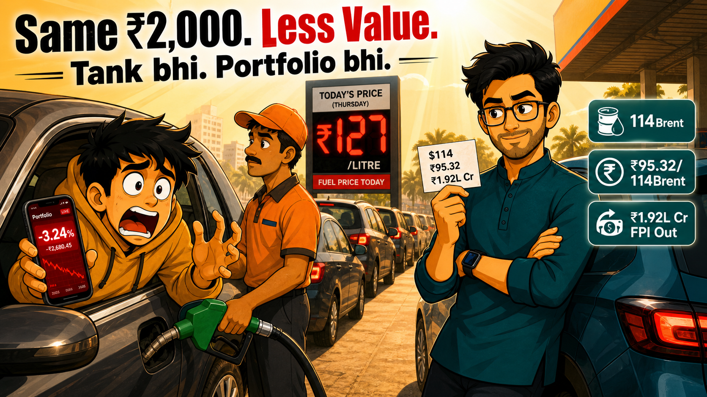

Crude $126, rupee ₹95.32, FPI ₹1.92 lakh crore bahar — aur yeh sab ek petrol pump pe samajh aaya.

Thursday. 11am. Highway ke paas ek petrol pump.
Six cars in line. Har ek mein AC full blast. Koi nahi hil raha — kyunki move karne ki koi jagah nahi thi.
Teo ki car teen number pe thi. Window up, portfolio app open, screen poori red. He'd been staring at it since the last signal — WhatsApp forwards scroll karta raha, news padh raha tha. "Market crash hone wala hai." "Dollar ₹100 jaayega." "Crude $150 tak jaayega." Kuch bhi samajh nahi aaya. Sab kuch aur anxiety badha raha tha.
Attendant ne window taki.
"₹127 sir. Kitna bharun?"
Teo ne board dekha like it owed him an explanation. Phir phone dekha. Phir board.
Neo ko call kiya.
Teo: "Yaar ₹127 petrol! ₹2,000 mein pehle poora tank bharta tha — ab half bhi nahi. Kya ho raha hai sab?"
Neo: "FPIs bhi yahi bol rahe the. Unhone ₹1.92 lakh crore nikale — sirf 4 mahino mein."
Teo: "..."
Neo: "Same feeling, Teo. Same ₹2,000 — less value. Tera tank aur tera portfolio dono same pump pe khade hain."
Teo ne ₹2,000 attendant ko diye — almost on autopilot. Litre counter dekha — ruka bahut jaldi. Pehle itni jaldi nahi rukta tha.
Woh number on the board — ₹127 — hadn't changed. Jo mil raha tha woh quietly shrink ho gaya tha. Bina kisi announcement ke. Bina kisi headline ke.
Yeh petrol ki kahani nahi hai. This is a crude oil story. Aur crude oil this week was the only story that mattered.
27 April ko Brent crude $100.38 per barrel tha. 1 May tak $111.31 ho gaya — US-Iran standoff aur Strait of Hormuz ke tension ne har swing drive kiya. Goodreturn
Teo: "Okay but yeh toh pehle se chal raha tha. Is hafte alag kya tha?"
Neo: "Monday ko Iran ne peace proposal diya. Market upar gaya. Thursday ko US ne reject kiya. Crude 7% ek din mein. Woh ek tweet ki tarah tha — sirf oil ka."
Intraday Thursday ko Brent ne $126 touch kiya — char saal ka high. Jis waqt Teo pump pe tha, that number wasn't on the board — lekin uski wajah zaroor usi mein thi. Business Today
Teo: "Theek hai — crude badha. But mera portfolio oil mein nahi hai. Phir kyun gira?"
Neo: "India 85% oil dollars mein khareedta hai. Crude upar — importers ko zyada dollars chahiye — rupee neeche. Simple chain hai."
Teo: "Kitna neeche?"
Neo: "Record. ₹95.32."
30 April ko rupee ₹95.32 per dollar pe gaya — all-time low — usi session mein jab Brent roughly 7% spike karke $126 pe pahuncha. Coincidence nahi. A direct mechanism — crude surges, India's import bill balloons, aur rupee overnight neeche aa jaata hai. Business Standard
Attendant dusri car pe ja chuka tha. Teo ne notice nahi kiya.
Teo: "Toh FPI itne kyun bhaage? India mein kuch gadbad hai kya?"
Neo: "Unhe India se problem nahi. $114 crude se problem hai. Dollar strong, rupee weak — unka return shrink hua. Nikle."
FPIs ne January se April 2026 ke beech ₹1.92 lakh crore Indian equities se nikale — poore 2025 calendar year ke ₹1.66 lakh crore se zyada, sirf 4 mahino mein. Business Standard
Yeh number sunke Teo thoda ruka. Big tha — lekin feel familiar tha. Wahi ₹2,000 wali feeling playing out at a scale most retail traders never connect karte apne portfolio se.
Peeche se horn baja. Phir aur. Teo still didn't move.
Teo: "Toh market aur giregi kya?"
Neo: "Galat sawaal. Sahi sawaal — crude $110 ke upar kitne hafte rehta hai? Wahi set karega next quarter ke margins."
RBI ke apne estimates kehte hain — har 10% crude rise se GDP 15 basis points ghatta hai, inflation 30 basis points badhti hai. Crude roughly 90% upar hai since January. The full impact hasn't hit corporate earnings yet. Pass-through abhi bhi aana baki hai. Multibagg AI
Do gaadi peeche, ek aadmi phone pe chilla raha tha. Broker ko. Nifty levels ke baare mein. "Upar jaayega ya neeche bata!" Volume badh raha tha jaise screaming se clarity milegi.
Teo: "Yaar ek number do — jo actually matter karta ho abhi."
Neo: "₹96. Rupee woh cross kare toh aviation, paints, tyres — sab squeeze. Abhi ₹95.32 pe hai."
Teo: "Itna paas?"
Neo: "Price jhooth nahi bolta — par context chahiye."
Attendant waapis aaya change lekar.
Teo ne haath hilaya. "Rehne do."
Car start ki. Quietly pulled out.
Rearview mirror mein — woh aadmi abhi bhi chilla raha tha broker pe. Still asking about Nifty levels. Still getting nowhere.
Woh banda ab nahi tha.
Pehli baar petrol board just an annoyance nahi lagi. It felt like a chart. Aur Teo finally jaanta tha isse kaise padhna hai.
1. Brent — $110 ke upar ya neeche? That single number will write next quarter's corporate earnings story. Aviation, paints, chemicals, aur tyres — yeh sectors crude-linked input costs se seedha hit ho rahe hain. Crude jitna zyada time $110+ pe rehega, margin squeeze utna deeper hoga. Business Today
2. Rupee ₹96 — yeh line dekho Round number obsession nahi hai yeh — it's the threshold analysts are flagging for OMC stress and aviation margin pressure. US Fed ne rates 3.5–3.75% pe hold kiye hawkish tone ke saath — emerging market currencies including the rupee remain under structural pressure. Business Standard
3. FPI vs DII net flow — weekly Sirf Nifty mat dekho. Watch the differential. Domestic institutional investors ne roughly ₹1.7 lakh crore YTD absorb kiya hai — wahi cushion hai jo market ko hard fall se rok raha hai. Jis din DII buying slow ho aur FPI selling continue kare — woh hai asli signal. Business Standard
Pump board abhi bhi ₹127 bol raha tha jab Teo nikal gaya.
Same board. Alag aankhein.
Share karo apne us dost ke saath jo abhi bhi broker pe chilla raha hai Nifty levels ke liye — bina yeh jaane ki actually kya drive kar raha hai.